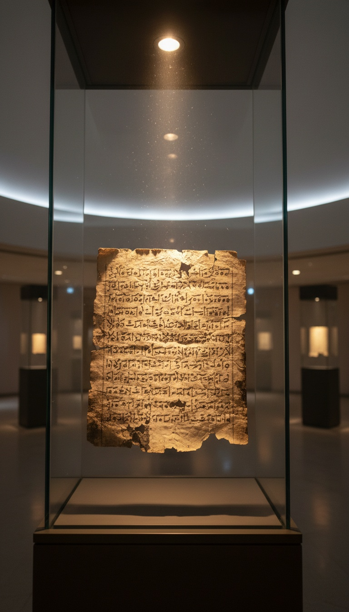

Every English Bible says giants in Genesis 6:4. The Hebrew says Nephilim, from the root naphal, to fall, and somewhere between Alexandria and London a bloodline became a height.
The Hebrew word is still sitting in the oldest complete copy of Genesis on earth, the Leningrad Codex of 1008 AD at the National Library of Russia in St Petersburg, and in the Aramaic scrolls pulled out of the Qumran caves after 1947. The height reading came from one team of translators working in Egypt three centuries before Christ, and every English Bible since has copied their choice.

The Hebrew Word Describes a Fall
Genesis 6:4 reads, in Hebrew, that the Nephilim were on the earth in those days and afterward, when the sons of God came in to the daughters of men and they bore children to them, and these were the gibborim of old, the men of renown. Two Hebrew nouns, two groups, and neither one is a measurement.
The root naphal appears more than four hundred times in the Hebrew Bible and it means one thing. Goliath falls on his face in 1 Samuel 17:49. The walls of Jericho fall flat in Joshua 6:20. Saul falls on his own sword in 1 Samuel 31:4. A Hebrew reader hearing Nephilim heard the fallen ones, the same way an English reader hearing swimmers hears people who swim.
Ezekiel 32:27 uses both words in one breath. The prophet describes the gibborim nophelim, the fallen mighty ones, who went down to Sheol with their weapons of war and their swords laid under their heads. Same vocabulary as Genesis 6, same pairing, and Ezekiel is describing who they were and where they went, never how tall they stood.
Alexandria, 250 BC: The Room Where the Word Changed
Around 250 BC, Ptolemy II Philadelphus commissioned a Greek translation of the Torah for the Library of Alexandria. The Letter of Aristeas records seventy two Jewish scholars brought from Jerusalem and housed on the island of Pharos to do the work. Their text became the Septuagint, the Bible of the Greek speaking world and the Bible the apostles quoted.
At Genesis 6:4 those scholars wrote gigantes. In their Greek that word carried Hesiod's Theogony, where the Gigantes are born when the blood of the sky god Ouranos falls onto the earth. Gigas comes from gegenes, earth born, and the Alexandrian translators chose a word that meant the seed of a sky being planted in the ground. They matched the myth, and it was the copyists after them who flattened it into size.
The same team shows their hand two verses earlier. At Genesis 6:2 the Codex Alexandrinus, a fifth century Septuagint held at the British Library in London, reads angeloi tou theou, the angels of God, where the Hebrew has sons of God. The manuscript that carries gigantes at verse 4 carries angels at verse 2. The men who wrote giants knew exactly what kind of fathers they were describing.
The Copy Chain From Bethlehem to King James
Jerome sat in Bethlehem between 390 and 405 AD translating the Hebrew directly into Latin, and his Vulgate still reads gigantes autem erant super terram. The oldest complete copy of that Vulgate, the Codex Amiatinus of around 700 AD, sits in the Laurentian Library in Florence with the word intact. Jerome had the Hebrew in front of him and kept the Greek answer.
English came within one translator of getting it right. William Tyndale's 1530 Pentateuch, printed in Antwerp, renders the verse as there were tirantes in the world in those days. Tyrants. He was strangled and burned at Vilvoorde in 1536, the Geneva Bible of 1560 went back to giants, and the King James of 1611 followed Geneva.
The King James translators were under orders. Archbishop Richard Bancroft's first rule for the 1604 project told the forty seven scholars to follow the Bishops' Bible and alter it as little as the truth of the original would permit. His third rule told them to keep the old ecclesiastical words. Giants was an old word by then, and the rule locked it in for four centuries.
The fathers were named for their fall. The sons were named for their power. Only the translation named anyone for their height.
The Dead Sea Scrolls Kept the Word
In 1947 a Bedouin shepherd named Muhammed edh-Dhib broke into Cave 1 at Qumran, and the scrolls that came out are now in the Shrine of the Book at the Israel Museum in Jerusalem. They are the oldest Hebrew and Aramaic witnesses to these stories in existence, a thousand years older than the Leningrad Codex, and the word in them is Nephilin, the Aramaic form of Nephilim, with the fall still inside it.
The Genesis Apocryphon, catalogued 1Q20, was in that same cave. In its second column Lamech confronts his wife Bitenosh because his newborn son Noah looks wrong, and he demands to know whether the child was fathered by one of the Watchers, one of the Nephilin. She swears on the Great Holy One that the seed was his. The community that copied Genesis read the Nephilim as fathers who came from somewhere else.
Cave 4 held the Book of Giants, fragments 4Q203, 4Q530 and 4Q531, and it names them. Ohyah, Hahyah and Mahaway are sons of Watchers, they dream of a tablet being washed clean by a flood, and they send Mahaway to Enoch to ask what it means. Alongside them sat eleven Aramaic copies of the Book of Enoch, and Jude 14 quotes that book word for word in your New Testament.
The Gibborim Are the Sons, and the Sons Have a Rank
Gibbor is a rank in Hebrew. David's thirty seven elite warriors are the gibborim in 2 Samuel 23:8. Nimrod began to be a gibbor on the earth in Genesis 10:8. Isaiah 9:6 calls the coming child El Gibbor, Mighty God. The word measures power, and Genesis 6:4 hands it to the children born after the sons of God crossed into human women.
Numbers 13:33 uses Nephilim a second time and gives away the grammar. The spies report the Anakim as coming from the Nephilim. That is a preposition of descent. You are from a family, from a father, from a line, and the text tracks a lineage from the fallen fathers to the Anakim of Hebron in the same way it tracks Abraham to Isaac.
Augustine pushed back in City of God, book 15, chapter 23, written around 420 AD, and argued the sons of God were the human descendants of Seth. He wrote four centuries after Philo of Alexandria's treatise On the Giants, three centuries after Josephus wrote in Antiquities 1.3.1 that angels of God begat sons on women, and long after the Qumran scribes and the author of Jude had all read angels. Job 1:6 and Job 38:7 use the same phrase bene ha-elohim for beings standing in God's court while the morning stars sing, and the Sethite reading has to pretend those verses are about farmers.
Genesis Rabbah 26:5 records Rabbi Shimon bar Yochai, in the second century, cursing anyone who read the sons of God as angels. A reading gets cursed when it is winning.
The word is still in your Bible. The New International Version and the English Standard Version both print Nephilim at Genesis 6:4 untranslated, and the King James still puts the Hebrew in the margin. Modern committees stopped translating it because giants was wrong and fallen ones was unprintable, so they left the word standing there in a foreign language and moved on.
So read the verse the way the scribes at Qumran read it. Fallen ones fathered mighty ones, and a rank was handed down through a crossing the text refuses to explain. That leaves one question the translators buried under a height for two thousand three hundred years. If the fathers fell, where did they fall from? Tell me in the comments where you think that line begins, because the next verse says God saw what they had made and decided to drown it.
Before you go
7 books the Vatican doesn't want you reading. Free PDF — the texts they cut, with sources. Joined by 140+ Inner Circle members.
No spam. Unsubscribe anytime.
Go deeper
The Hidden Canon, Vol. I — Enoch. Jubilees. Thomas. Mary. Judas. 90 pages, 14 chapters, every receipt cited. The books your Bible quietly removed.
Read the Canon →Books that informed this investigation
As an Amazon Associate, Hidden Epoch earns from qualifying purchases. Cost to you: nothing.
Research safely
The VPN we use to research without being tracked. First 3 months free.
Get NordVPN →